Angel and Ed's Big Island Vacation Recap
Beaches We Visited
Puako Beach: A beautiful rocky shoreline with lots of trees to shade you from the hot sun.
Hapuna Beach: One of the largest white sand beaches on the Big Island, great for swimming.
 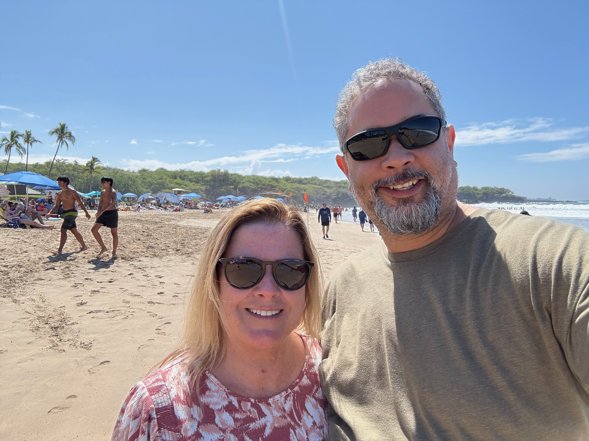
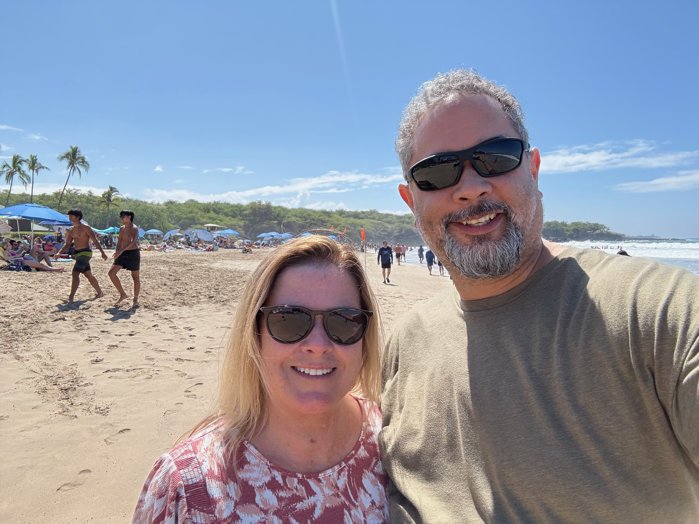
Waipi’o Valley Beach: A stunning black sand beach with lush cliffs.
 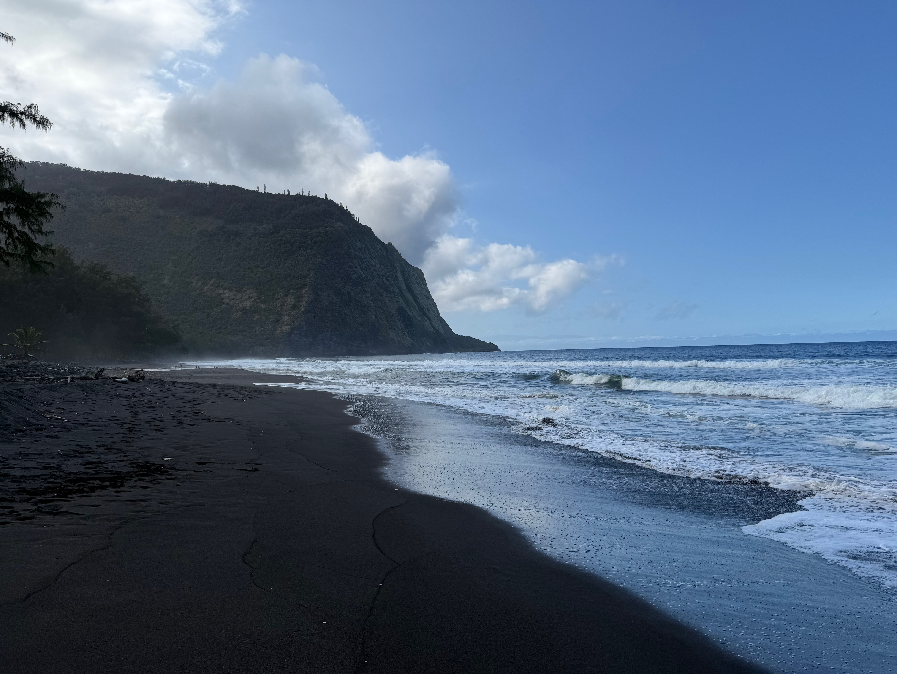
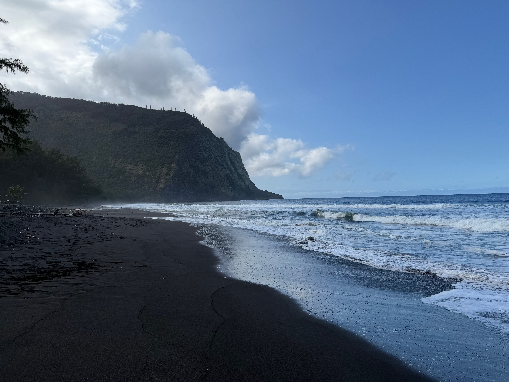


Kahua’oa Beach: We watched the sunset and then had margaritas outside at the Mauna Kea resort

Adventures and Activities
Akaka Falls State Park: Home to the spectacular 442-foot Akaka Falls.


Onomea Bay Trail: A scenic coastal trail near the botanical gardens.
 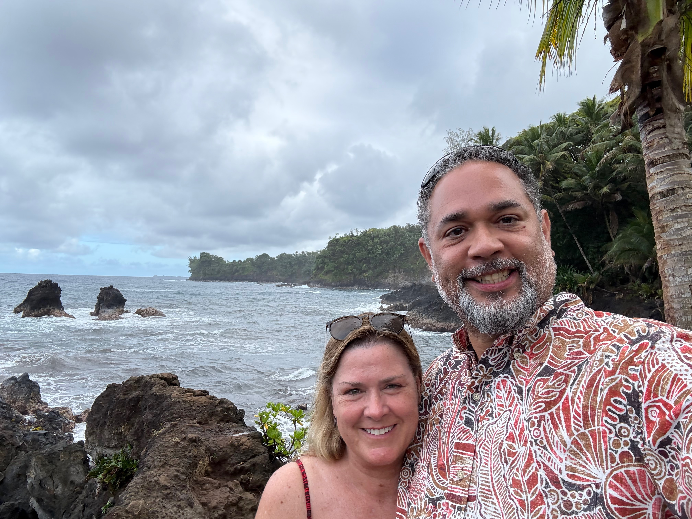
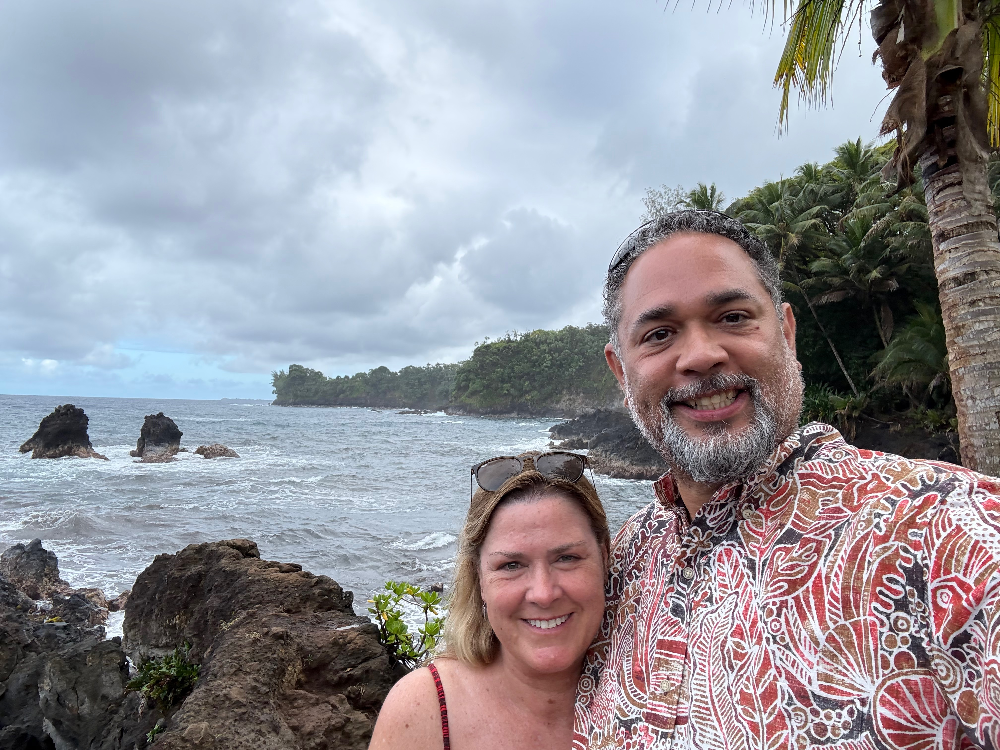
Mauna Kea Summit: We visited the CFH Telescope for an unforgettable experience.
 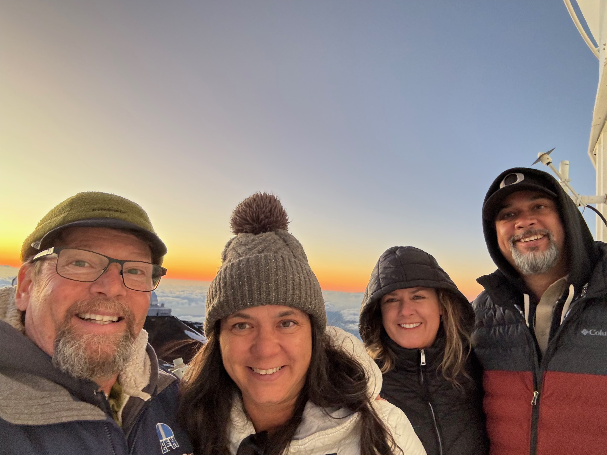
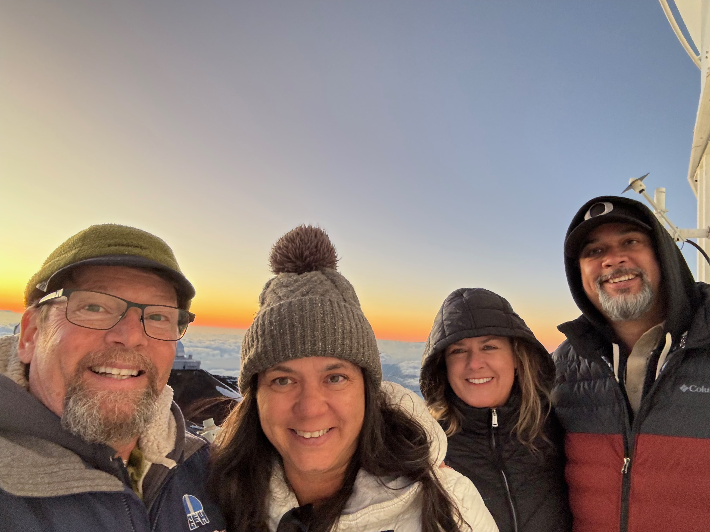

Farmers’ Markets: Visited Kamuela, Hāmākua Harvest, and Hilo Farmers Markets.
Island Breeze Luau: Watched from the Kailua Pier near the King Kamehameha Kona Beach Resort.
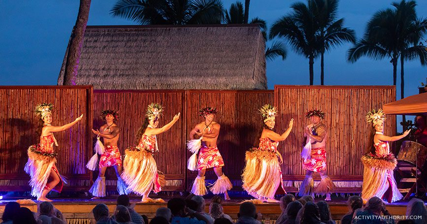Live Music: Listened to HAPA at the Blue Dragon Tavern and jazz at Uila Records in Waimea.
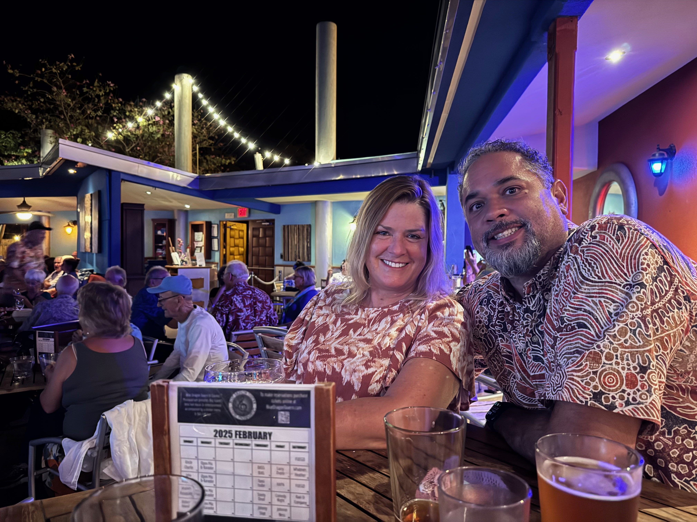Ala Kahakai: We hiked this historic trail.


Where We Ate
Merriman’s in Waimea: A top-tier farm-to-table restaurant serving fresh Hawaiian cuisine.
Pau Pizza in Waimea: A local favorite for delicious, wood-fired pizzas.
Big Island Brewhaus in Waimea: Known for craft beer and island-inspired dishes.
Hawaiian Style Café in Waimea: Famous for their huge portions and local comfort food.
Pineapples in Hilo: A vibrant open-air restaurant with tropical dishes.
 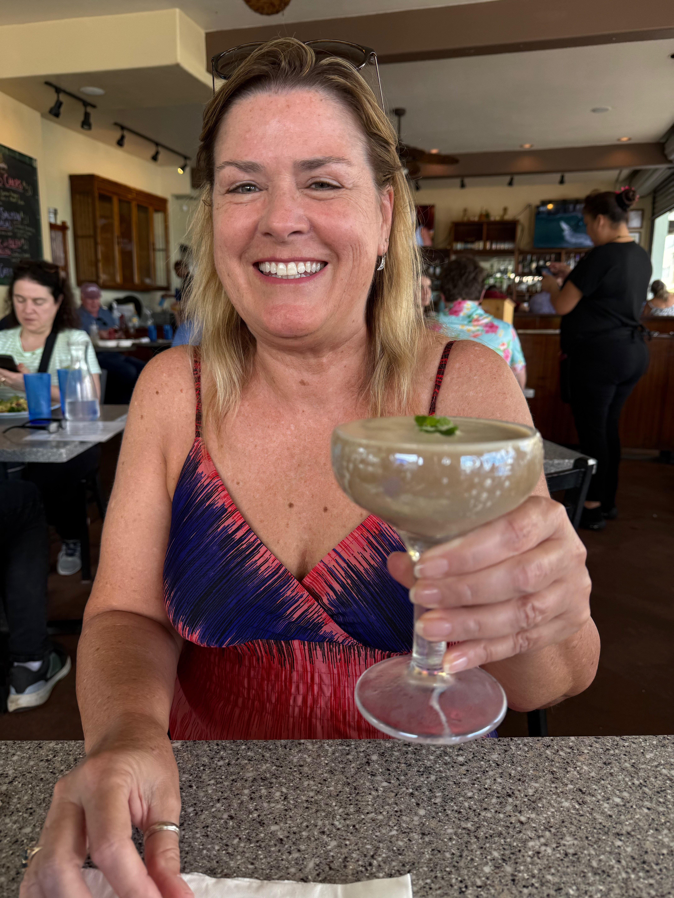
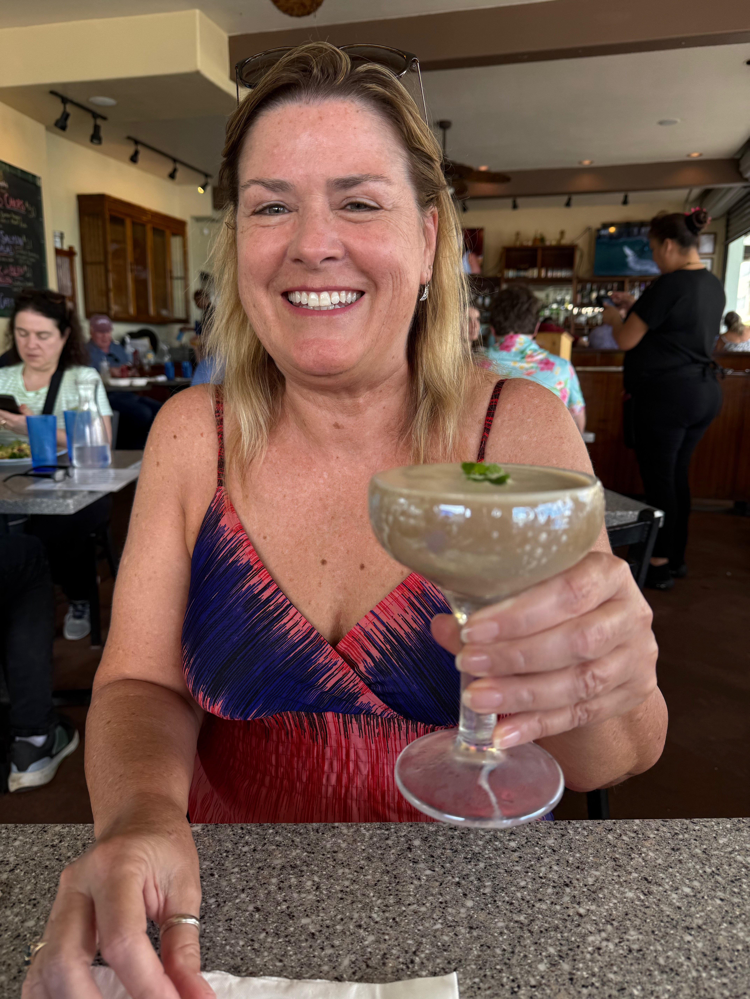
Papa Kona Restaurant & Bar: We had brunch at this open-air venue with great views.
Huggos in Kona: An upscale beachside restaurant, perfect for sunset dining.
Journey Cafe in Kona: On our final day in Kona we had a delicious vegan lunch.
Miscellaneous fun stuff
- We celebrated Andy's Birthday
- We grilled steak and drank beer at Cietta and Andy’s house in Waimea
- We ate dinner with Paul at the Big Kahuma Beach Grill
- We ate Musubi, and Poi from the Kamuela Farmers Market
- We ate lots of Poke from the market and various restaurants
- We had lunch and cocktails at Tommy Bahama
- We visited the Kalopa State Recreation Area
- We went to Mauna Lani’s Full Moon Talk story
- We saw exotic fish and a baby turtle in the ocean, dozens of gecos, a giant snail, and a giant spider
- Spent the last two nights at the King Kamehameha Kona Beach Resort
Things to do next time
- Have dinner at Magic’s Beach Grill in Kona
- Explore the Waikoloa and/or the Puako Petroglyphs
- Witness an active lava flow
- Fair Wind Snorkel Cruise to Captain Cook’s Cove
- Eat at Hina Rae’s in Waimea
- Zipline past a Waterfall
- Swim with dolphins and/or rays
- Do the Waipi’o Ranch UTV tour